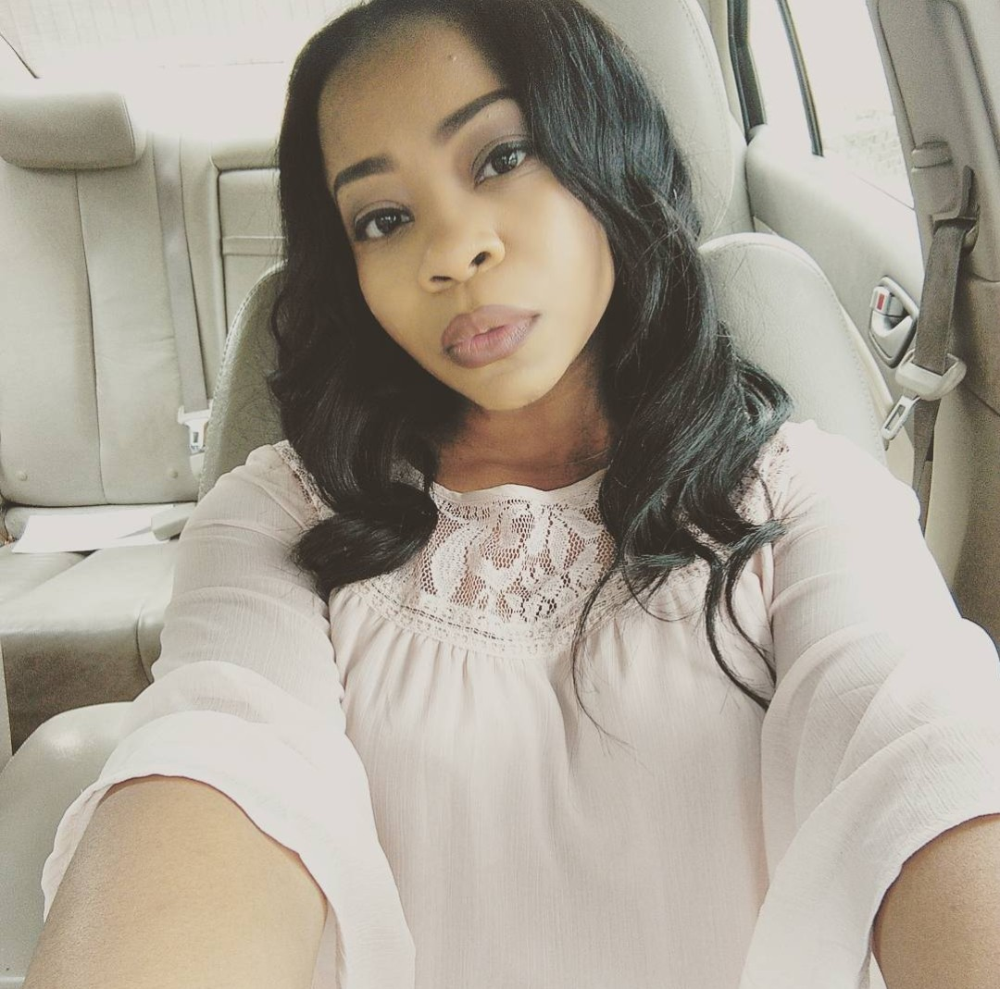
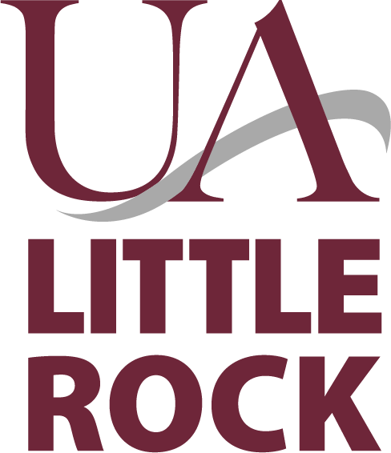
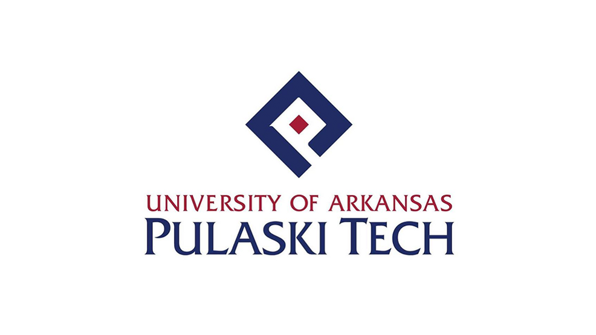
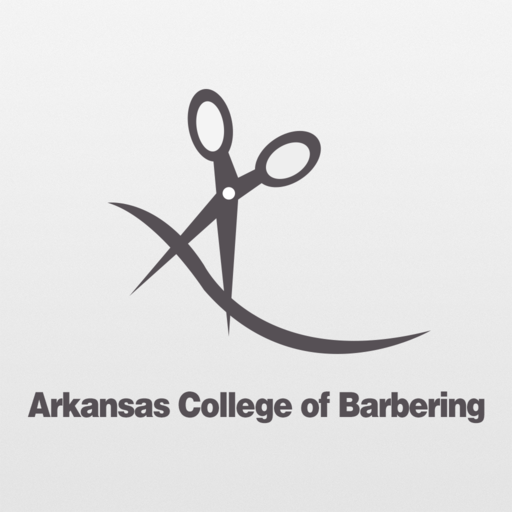

Portfolio of Whitney Sims
Profile
 UALR undergraduate student, majoring in Information Science. Very driven and self motivated in every area of my field. Graduating in the Fall of 2022, with a few accomplishments of IT, data, coding, web development and engineering experiences.
Future bachelor graduate seeking to leave the nursing field and enter into the world of technology with a mastors in the near furture.
Skills
- C++
- HTML
- Java
- JavaScript
- CSS
- SQL
- Typing Proficient in Microsoft word and Computer Operation Office
Education
University of Arkansas at Little Rock
College- 2801 S University Ave, Little Rock, AR 72204
University of Arkansas – Pulaski Technical College
College- 3000 W Scenic Dr, North Little Rock, AR 72118
Arkansas College of Barbering
College- 200 E Washington Ave #5615, North Little Rock, AR 72114

Hall STEAM Magnet High School
High School- H St, Little Rock, AR 72205
Accomplishments
RESUME
Whitney Sims
OBJECTIVE
Seeking a job opportunity to further my professional skill set by continuing education, work-related experiences in the technology field. To gain meaningful knowledge in conjunction with experience. Experienced as a future business owner, computer system, IT, data entry, and teaching position.EDUCATION
BACHELOR OF SCIENCE | EXPECTED GRADUATION FALL 2022 | UNIVERSITY OF ARKANSAS AT LITTLE ROCK
ASSOCIATE OF SCIENCE | MAY 20, 2017 | PULASKI TECHNICAL COLLEGE
SKILLS & ABILITIES
EXPERIENCE
CNA | PHLEBOTOMY| UAMS | JUNE 2021 PRESENT
Daily charting, Lab samples, blood work. Responsible for daily care tasks: mobility assistance, bed making, hygiene, collecting specimens, and awareness of patient well-being.CNA | CONWAY REGIONAL REHAB | JULY 2019 TO October 2021
Recording every day ADL's details of individual residents’ behavior, duties, and vitals on tablet. Responsible for daily care tasks: mobility assistance, bed making, bathing and hygiene, meal service, collecting specimens, and awareness of patient well-being.CNA | THE MANOR | JULY 2017 – TO MAY 2018
Ability to demonstrate knowledge and skills necessary to provide care appropriate to the age-related needs of the residents served. Responsible for daily care tasks: mobility assistance, bed making, bathing and hygiene, meal service, collecting specimens, and awareness of patient well-being.CNA | FOX RIDGE SENIOR LIVING | AUGUST 2015 TO OCTOBER 2017
Communicate closely with personnel, residents, family members, and visitors. Work directly with the DON and my colleagues to achieve better living and health strategies for our residents.CAREGIVER | CARELINK | FEBURARY 2013 TO DECEMBER 2015
Achieved high customer satisfaction for everyday duties such as: housekeeping activities; Engage in physical therapy; assist clients in addressing personal needs; Observe clients; Set up medical equipment, Cooking and Cleaning.LICENSE STYLIST/ INVENTORY MANAGER | DREAM STYLES | APRIL 2012 TO JANUARY 2013
Maintain records of shipment and replenish. Researched weekly inventory charts and recorded facility needs.Letter of Introduction
October 11, 2021Whitney Sims
624 Spruce St
Conway, Arkansas, 72032
(501)744-2070
WhitneyJackson0407@gmail.com
I’m an undergrade student looking for an opportunity to join your team. I’d love to discuss a position as an Information technology technician.
I attend UALR and will be majoring in Information Science. Throughout my four years of attending school, I have developed a passion for IT. I’ve had hands on experience in my classes creating and developing coding and working closely with my professor and team members. Through this journey I’ve devoted myself to the IT field and that devotion I know I’d be a great candidate for your company.
I’m willing to travel throughout Arkansas or out of state. My schedule is very flexible and can work weekends and holidays. I have no experience other than school, I’m so motivated and goal driven that I can start as an intern for a month or so for the experience working my way to becoming full time employee.
Thank you for your time. I can be reach at any time, my information is located at the top of the page, feel free to contact me by email, phone or both.
Sincerely yours,
Whitney Sims